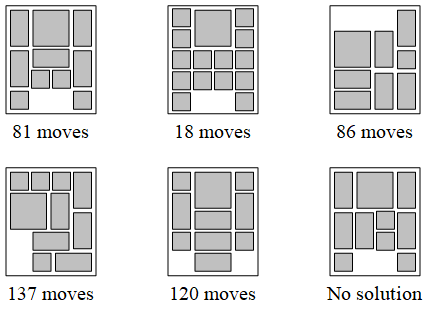

作者：赵志崑
本算法能够找到各种华容道开局的最佳解法（步数最少），也能证明某个开局没有解法。算法的基本思路是在盘面状态空间中进行宽度优先搜索。
首先，将华容道盘面划分为一个4*5的网格，格子中的棋子用数字1~8来表示。1表示1*1的小兵，2表示2*2的曹操，3~8分别表示关张赵马黄魏这些2*1或1*2的武将，0表示空。这样，一个盘面状态可以用一个4*5的二维数组表示，进一步可以表示为一串20个数字。例如：
然后，采用Open-Close队列来实现宽度优先搜索。Open队列中存放未扩展过的状态，Close队列中存放已经扩展过的状态。开始时，先将初始盘面状态放入Open队列。之后，每个工作循环从Open队列中取出第一个状态s，遍历所有的可移动动作扩展出所有子状态，将剪枝后剩余的子状态加入Open队列，将状态s放入Close队列。循环终止条件为找到解，即曹操位于最下方中部；或者证明无解，即Open队列变为空。
剪枝是为了避免搜索重复的状态。在扩展生成出一个状态后，需要先检索Open队列和Close队列中是否已经有相同模式的状态。如果没有，才将该状态加入Open队列。这里的判定条件为“相同模式”，不要求各武将位置完全相同，允许各武将互换位置。例如，下面三个状态具有相同模式，状态2是状态1通过武将3、4交换得到，状态3是状态1通过武将4→3, 5→4, 6→5, 7→6, 3→7的交换得到。

Open队列中的状态需要按照距离初始状态的步数排序，这是为了保证最先找到的解法所用步数最少。这里同一个棋子连续移动两次也只算一步。比如下面的例子，状态1移动黑色棋子得到状态2，状态2继续移动黑色棋子得到状态3，状态2移动灰色棋子得到状态4。那么，假如状态2距离初始状态n步，那么状态3距离初始状态也是n步，但状态4距离初始状态n+1步。状态3在Open队列中应排在状态4之前，以便优先处理。
这样，队列中一个状态的数据中除了记录盘面外，还要记录距离初始状态的步数和最后一步的棋子移动。另外，为了从结束状态能生成解法的详细移动序列，还要有一个指向父节点的指针。综合起来，一个状态的数据结构如下：
当发现结束状态时，利用父节点指针，从结束状态开始向前回溯到初始状态，就能得到解法的具体移动序列。如下图所示：
本算法在JavaSE平台上实现，界面如下图。在最上方的文本框中输入初始状态，然后就能演示搜索过程。左边的列表是Close队列，右边的列表是Open队列，每个状态代表的盘面都能显示在旁边。
本算法已经求出了374个初始盘面的最优解，部分最优解的步数如下图。比如，第一个盘面是最经典的“横刀立马”，需要81步，这个结果已经被很多研究所证明。
论文下载
Solving_HuaRongDao_Puzzle_and_Its_Variations_using_Breadth_First_Search.pdf